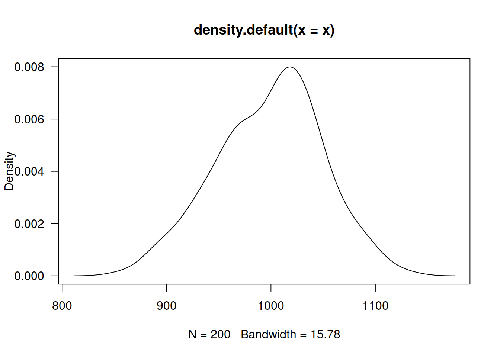

Código 4.3
Módulo 4- Unidad 4.3
dgonzalez

Pruebas paramétricas
Supongamos las hipótesis:
| \(Ho\) : \(\mu_{W} = 1000\) |
| \(Ha\) : \(\mu_{W} \neq 1000\) |
# Problema 1
w=rnorm(100,1000,2) # simulación de los datos| \(Ho\) : \(X \sim norm\) |
| \(Ha\) : \(X no \sim norm\) |
shapiro.test(w) # verificación de normalidad
Shapiro-Wilk normality test
data: w
W = 0.98432, p-value = 0.2833Prueba de hipótesis para una media
Supuestos:
| X normal |
| Varianza conocida (\(\sigma^{2}=4\)) |
BSDA::z.test(w, mu=1000, sigma.x = 2)
One-sample z-Test
data: w
z = -1.092, p-value = 0.2748
alternative hypothesis: true mean is not equal to 1000
95 percent confidence interval:
999.3896 1000.1736
sample estimates:
mean of x
999.7816 Prueba de hipótesis para una media
| \(Ho\) : \(\mu = \mu_o\) | \(Ho\) : \(\mu \leq \mu_o\) | \(Ho\) : \(\mu \geq \mu_o\) |
| \(Ha\) : \(\mu \neq \mu_o\) | \(Ha\) : \(\mu > \mu_o\) | \(Ha\) : \(\mu < \mu_o\) |
Supuestos:
| X normal |
| Varianza desconocida |
| \(Ho\) : \(\mu \geq 5\) |
| \(Ha\) : \(\mu < 5\) |
#-------------------------------------------------------------------------------
# Problema 2
t=c(4.21,5.55,3.02,5.13,4.77,2.34,5.42,4.50,6.10,3.80,5.12,6.46,6.19,3.79,3.54)
mean(t)[1] 4.662667sd(t)[1] 1.210658t.test(t,mu=5, alternative="less")
One Sample t-test
data: t
t = -1.0792, df = 14, p-value = 0.1494
alternative hypothesis: true mean is less than 5
95 percent confidence interval:
-Inf 5.213235
sample estimates:
mean of x
4.662667 | \(Ho\) : \(p \geq 5\) |
| \(Ha\) : \(p < 5\) |
#-------------------------------------------------------------------------------
#Problema 3
z=(24/40-.76)/(sqrt(.76*(1-.76)/40))
prop.test(24,40,0.76,alternative="less")
1-sample proportions test with continuity correction
data: 24 out of 40, null probability 0.76
X-squared = 4.7711, df = 1, p-value = 0.01447
alternative hypothesis: true p is less than 0.76
95 percent confidence interval:
0.0000000 0.7282033
sample estimates:
p
0.6 | \(Ho\) : \(\mu_1 \geq \mu_2\) |
| \(Ha\) : \(\mu_1 < \mu_2\) |
#---------------------------------------------------------------------------------
# Problema 4
n1=36 ; mx1=6 ; sx1=4
n2=40 ; mx2=8.2; sx2=4.3
F=sx1^2/sx2^2
RdeRF=qf(c(0.025,0.975),35,39)
#t.test(x1,x2,mu=0, alternative = "less")
s2p=((n1-1)*sx1^2+(n2-1)*sx2^2)/(n1+n2-2)
sp=sqrt(s2p)
T4=(mx1-mx2)/(sp*sqrt(1/n1+1/n2))
RdeRT4=qt(0.05,(n1+n2-2))| \(Ho\) : \(\mu_{g1} \geq \mu_{g2}\) |
| \(Ha\) : \(\mu_{g1} < \mu_{g2}\) |
#-----------------------------------------------------------------------------------
# Problema 5
p5=3/40
z5=(p5-0.05)/sqrt(0.05*0.95/40)
#----------------------------------------------------------------------------------# Problema 6
g1=c(75,76,74,80,72,798,76,73,72,75)
g2=c(86,78,86,84,81,79,78,84,88,80)
mean(g1);sd(g1)[1] 147.1[1] 228.715mean(g2);sd(g2)[1] 82.4[1] 3.657564var.test(g1,g2)
F test to compare two variances
data: g1 and g2
F = 3910.3, num df = 9, denom df = 9, p-value = 8.882e-15
alternative hypothesis: true ratio of variances is not equal to 1
95 percent confidence interval:
971.2524 15742.6704
sample estimates:
ratio of variances
3910.257 t.test(g1,g2)
Welch Two Sample t-test
data: g1 and g2
t = 0.89445, df = 9.0046, p-value = 0.3944
alternative hypothesis: true difference in means is not equal to 0
95 percent confidence interval:
-98.92101 228.32101
sample estimates:
mean of x mean of y
147.1 82.4 | \(Ho\) : \(p_1 = p_2\) |
| \(Ha\) : \(p \neq p_2\) |
#---------------------------------------------------------------------------------
# Problema 7
n1=400 ;x1=80
n2=400 ; x2=88
prop.test(c(80,88),c(400,400))
2-sample test for equality of proportions with continuity correction
data: c(80, 88) out of c(400, 400)
X-squared = 0.3692, df = 1, p-value = 0.5434
alternative hypothesis: two.sided
95 percent confidence interval:
-0.07893199 0.03893199
sample estimates:
prop 1 prop 2
0.20 0.22 | \(Ho\) : \(\mu_1 \geq \mu_2\) |
| \(Ha\) : \(\mu_1 < \mu_2\) |
#-----------------------------------------------------------------------------------
# Problema 8
x1=c(45,73,46,124,30,57,83,34,26,17)
x2=c(36,60,44,119,35,51,77,29,24,11)
d=x1-x2
mean(d)[1] 4.9sd(d)[1] 4.72464t.test(x1,x2,paired = TRUE)
Paired t-test
data: x1 and x2
t = 3.2796, df = 9, p-value = 0.009535
alternative hypothesis: true mean difference is not equal to 0
95 percent confidence interval:
1.520196 8.279804
sample estimates:
mean difference
4.9 | \(Ho\) : \(\mu_{pa} \geq \mu_{pd}\) |
| \(Ha\) : \(\mu_{pa} < \mu_{pd}\) |
#------------------------------------------------------------------------------------
#Problema 9
pa=c(104.5,89,84.5,106,90,96,79,90,85,76.5,91.5,82.5,100.5,89.5,121.5,72)
pd=c(98,85.5,85,103.5,88.5,95,79.5,90,82,76,89.5,81,99.5,86.5,115.5,70)
d=pa-pd
mean(d)[1] 2.0625sd(d)[1] 2.032035t.test(pa,pd,paired = TRUE)
Paired t-test
data: pa and pd
t = 4.06, df = 15, p-value = 0.001026
alternative hypothesis: true mean difference is not equal to 0
95 percent confidence interval:
0.9797049 3.1452951
sample estimates:
mean difference
2.0625 | Verificación de normalidad | Comparación de varianzas | Diferencia de medias |
|---|---|---|
| \(Ho\) : \(X_{g1} \sim norm\) | \(Ho\) : \(\sigma^{2}_{g1} = \sigma^{2}_{g2}\) | \(Ho\) : \(\mu_{g1} \geq \mu_{g2}\) |
| \(Ha\) : \(X_{g2} no \sim norm\) | \(Ha\) : \(\sigma^{2}_{g1} \neq \sigma^{2}_{g2}\) | \(Ha\) : \(\mu_{g1} < \mu_{g2}\) |
#-----------------------------------------------------------------------
# Problema 10
g1=c(37,19,21,35,16,4,0,12,63,25,12,15)
g2=c(24,42,18,15,0,9,10,20,22,13)
mean(g1);sd(g1)[1] 21.58333[1] 17.01581mean(g2);sd(g2)[1] 17.3[1] 11.20565var.test(g1,g2)
F test to compare two variances
data: g1 and g2
F = 2.3058, num df = 11, denom df = 9, p-value = 0.22
alternative hypothesis: true ratio of variances is not equal to 1
95 percent confidence interval:
0.5894187 8.2731556
sample estimates:
ratio of variances
2.30585 t.test(g1,g2)
Welch Two Sample t-test
data: g1 and g2
t = 0.70719, df = 19.104, p-value = 0.488
alternative hypothesis: true difference in means is not equal to 0
95 percent confidence interval:
-8.389007 16.955673
sample estimates:
mean of x mean of y
21.58333 17.30000 Pruebas no paramétricas
Prueba de rachas
library(randtests)
x=c("N","D","N","N","N","N","N","D","D","D","N","N","N","N","D","N","N","D","N","N","N","D","N","N","N","N","N","N","N","D","D","D","D")
rachas<-as.numeric(x=="N")
runs.test(rachas,alternative = "left.sided",threshold = 0.5,pvalue = "exact",plot=F)
Runs Test
data: rachas
statistic = -1.465, runs = 12, n1 = 22, n2 = 11, n = 33, p-value =
0.1032
alternative hypothesis: trendPruebas de normalidad
Existen varias pruebas de hipótesis para verificar si una variable tiene un comportamiento aproximadamente normal.En todos los casos las hipótesis planteadas son:
| \(Ho\): \(X\) tiene distribución Normal |
| \(Ha\): \(X\) no tiene distribución Normal |
# se genera una variable aleatoria normal
x=rnorm(200,1000,50)
plot(density(x), las=1)
Shapiro Wilk
shapiro.test(x)
Shapiro-Wilk normality test
data: x
W = 0.99312, p-value = 0.4759Esta prueba no requiere la instalación de paquetes adicionales, está disponible en la configuración básica de R
Paquete normtest
Las siguientes pruebas requieren instalar y cargar el paquete:
normtest
install.packages("normtets")
library(normtest)Jarque-Bera ajustado
ajb.norm.test(x) Frosini
frosini.norm.test(x) Geary
geary.norm.test(x) Hagazy-Green 1
hegazy1.norm.test(x) Hagazy-Green 2
hegazy2.norm.test(x)Jarque-Bera
jb.norm.test(x) de kurtosis
kurtosis.norm.test(x)de sesgo
skewness.norm.test(x) Spiegelhalter
spiegelhalter.norm.test(x) Weisberg-Bingham
wb.norm.test(x) Paquete nortest
Las siguientes pruebas requieren instalar y cargar el paquete:
nortest
# install.packages("nortets")
library(nortest)Anderson-Darling
ad.test(x)Cramer-von Mises
cvm.test(x)Lilliefors (Kolmogorov-Smirnov)
lillie.test(x)chi-cuadrado de Pearson
pearson.test(x)Shapiro-Francia
sf.test(x)En todos los casos se presenta un valor-p grande por lo cual no se rechaza \(Ho\), asumimos que \(Ho\) es verdad. Asumimos que la distribución de la variable \(X\) es normal
Referencias :